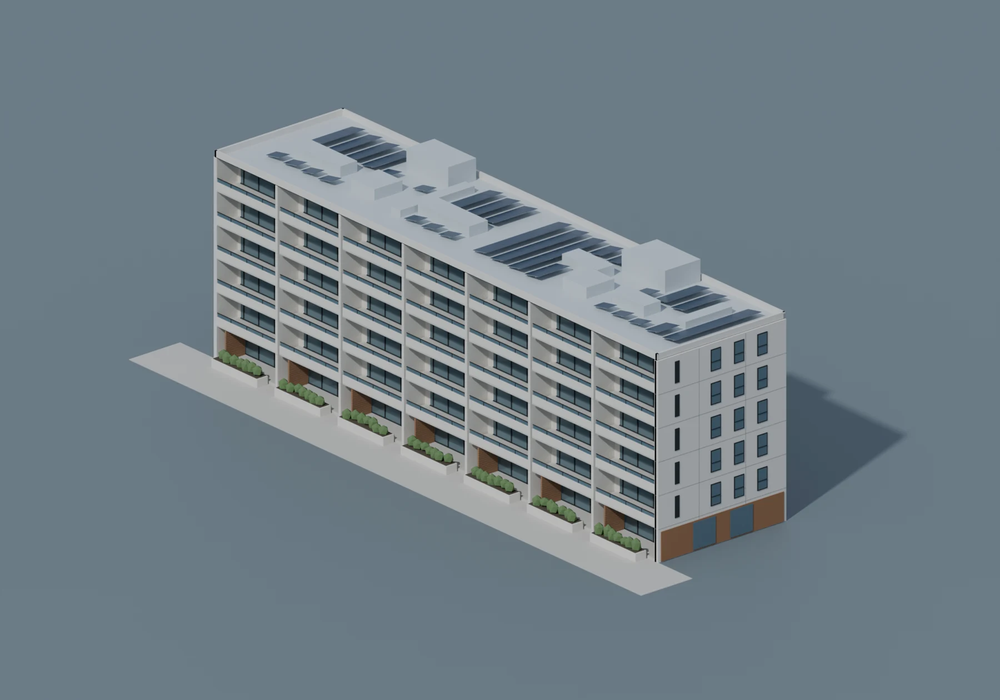
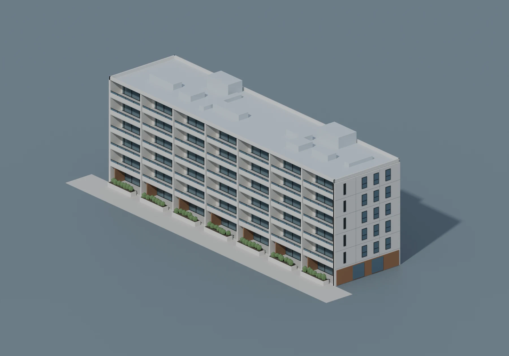
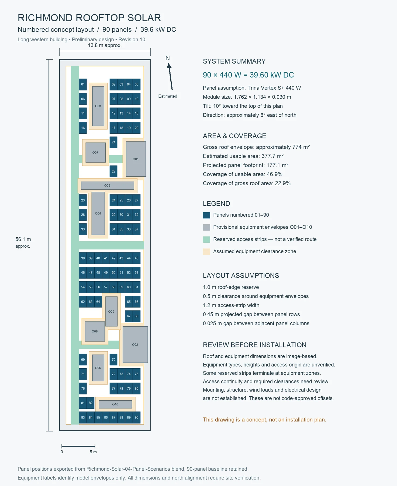
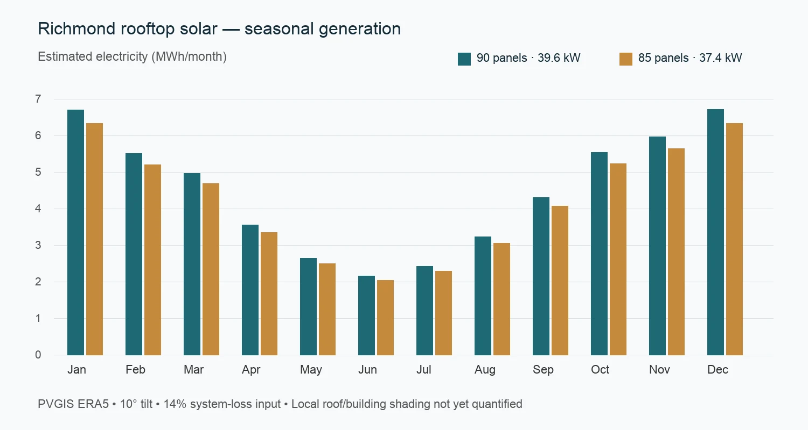

{kind=link}
WORKING BASELINE
90 panels Retained
39.6 kW DC
6.2% winter shading measure*
The larger system remains our working concept. No final energy or financial advantage has been established.
RICHMOND, VICTORIA · CONCEPT STUDY
One apartment building. A considered solar proposal. Explore the model, follow the evidence, and see what comes next.
A learning project prepared for a builder conversation.
Site dimensions and installation details remain provisional.

Representative 440 W modules
Proposed system capacity
Modelled output before local-shading adjustment
Approximate gross roof envelope
01 / THE BUILDING
The long western building under the supplied map pin. Six apparent levels, recessed balconies and a roof modelled with estimated equipment obstacles.
90 panels · 39.6 kW DC · interactive model
Drag to rotate · Scroll or pinch to zoom. Geometry is approximate.
Download the 3D model ↗02 / BEFORE & AFTER
Move the slider to compare the building with and without the 90-panel system. Both renders use exactly the same camera and lighting.

BEFOREAFTER · 39.6 kWThese are renders of our approximate building model, not photographs or a verified installation design.
03 / THE ROOF PLAN
The roof envelope is approximately 56.1 × 13.8 metres. We reserved space around estimated equipment and kept the proposed access strips free of panels.

The current layout fits 90 panels around ten provisional equipment envelopes. Its projected panel footprint is approximately 177 m².
COVERAGE, EXPLAINED
46.9%
of the estimated 377.7 m² usable area after the assumed exclusions. This is 22.9% of the whole roof.
These are modelling assumptions, not verified Australian code requirements. Equipment identities, access connections, structural capacity and required clearances still need a site assessment.
Download the numbered plan ↗Targets refer to projected panel coverage of usable roof area. The current packing layout does not reach 50% or 80%; both are capped at 90 panels. This is not a proven maximum for the real roof.
04 / FOLLOW THE SUN
A 15-second comparison follows the 90-panel model from 08:00 to 18:00 local time on 21 December and 21 June 2026. Summer uses AEDT; winter uses AEST.
Blender Sun Position calculations · Estimated north alignment and surrounding geometry
Download the 15-second clip ↗| Local clock time | Summer | Winter |
|---|---|---|
| 09:26 | ~2% | ~20% |
| 13:00 | ~0% | ~2% |
| 16:34 | ~0% | ~43% |
Shaded panel area is not the same as electricity lost. Equipment and neighbouring-building heights are estimates; trees and distant obstructions are not modelled. This is a preliminary geometric study.
05 / THE TRADEOFF
We tested row spacing and a version that removes the five most shaded panels. The smaller layout has less sampled shading, but the original retains more unshaded panel area overall in the winter comparison.
WORKING BASELINE
39.6 kW DC
6.2% winter shading measure*
The larger system remains our working concept. No final energy or financial advantage has been established.
LOWER-SHADE ALTERNATIVE
37.4 kW DC
3.5% winter shading measure*
Five heavily shaded panels removed. Lower capacity, with more breathing room near obstructions.
*Sun-angle-weighted sampled panel shade, 09:00–16:00 on the winter study day. This is not annual electricity loss.
06 / WHAT IT COULD GENERATE
Location-based PVGIS modelling estimates 53,700 kWh a year for the 90-panel option, versus 50,700 kWh for 85 panels. Both use the same solar-resource and standard loss assumptions.

Local shading is not yet included as a verified annual adjustment. The estimates use 10° tilt, approximately 8° east of north and a 14% system-loss input. The summer/winter shade percentages have not been deducted from these annual estimates.
Eligible daytime common-area loads, such as lift operation, pumps and ventilation, could use the solar electricity behind the relevant meter.
As a simple energy comparison, 100 lights at 15 W for 12 hours consume 18 kWh/day. That is an illustration, not the building’s measured lighting load. Night-time use still needs grid supply, storage or another arrangement.
Common-area bills, interval electricity data, equipment schedules and the metering arrangement are needed to calculate actual load coverage, savings and export.
We haven’t promised a payback period, lower levies or full power coverage. Those claims need a site-specific design and real usage data.
07 / HOW WE GOT HERE
This project brings the research, modelling and analysis together. Each stage is saved, so the assumptions can be checked and the work continued.
Inspected satellite and December 2025 Street View imagery. Traced an approximate 56.1 × 13.8 m roof and confirmed the scope as the long western building.
Built the facade, recessed balconies and six apparent levels. An 18 m building height and rooftop equipment dimensions remain assumptions.
Used a representative Australian-market 440 W module. Tested coverage targets around provisional obstacles and reserved access space.
Used the official Blender Sun Position calculation module at the building’s coordinates. Compared summer and winter and tested a lower-shade alternative.
Modelled annual output with PVGIS and prepared a builder pitch, renders, roof plan, video and an interactive 3D export. The next stage is site verification.
08 / THE PROJECT LIBRARY
Use the pitch for the conversation, the visuals for the presentation, and the source pack to continue modelling. The Blender files and exported video are separate parts of the same project.
The 3D file is a model, the MP4 is an exported video, and the PDF is the pitch. You don’t need Blender to use the video or PDF.
FROM CONCEPT TO A REAL QUOTE
Verify the roof, review the common-area electricity data and ask your solar company for a site-specific design and quote.
{kind=link}
{kind=link}
{kind=link}
{kind=link}
{kind=link}